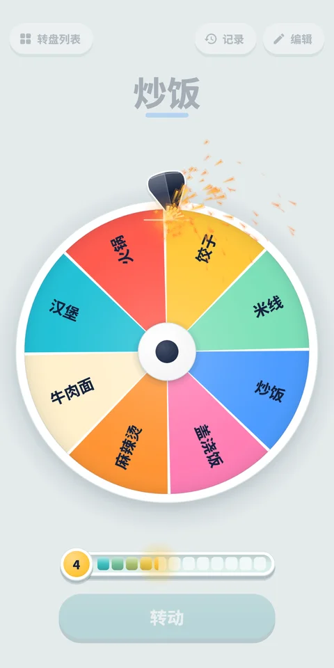
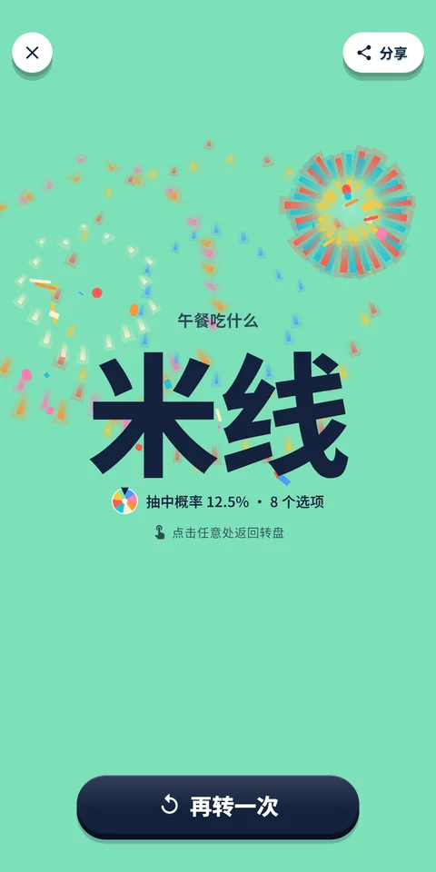
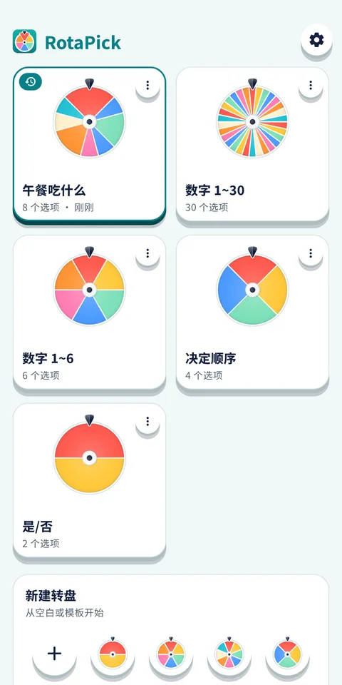
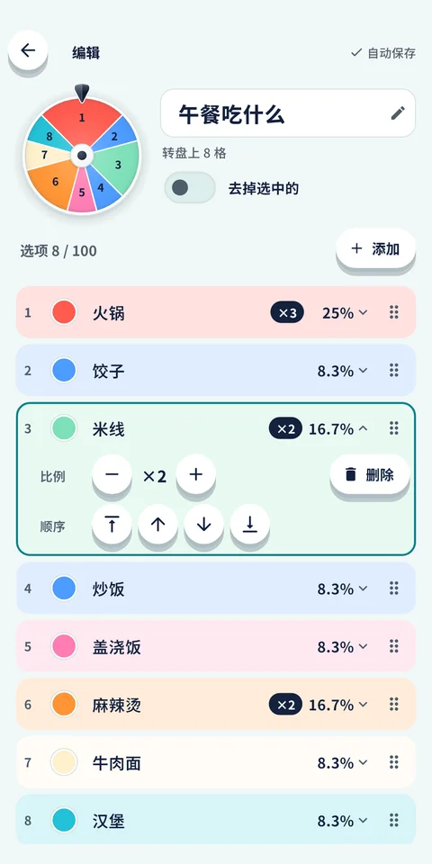

截图






关于应用
| 应用名称 | RotaPick |
|---|---|
| 版本 | 1.0.0 |
| 开发 | Willee Project |
| 支持平台 | Android |
写下选项，就会生成一个分成彩色格子的转盘。转动后，停在指针下的格子就是抽中的结果。午餐吃什么、决定顺序、是/否、抽签，需要从中选一个时都能用。
- 没有注册，也不用登录。你创建的转盘和记录都保存在设备里。
- 没有网络也能使用。 网络只用于屏幕下方的广告，以及发送使用统计和错误报告。
- 语言跟随设备设置。支持英语、韩语、日语、中文（简体、繁体），也可以在设置里自己选。
- 结果不是事先定好的。格子的宽度就是抽中的概率（第8章）。
1. 开始使用
- 第一次打开时，会直接打开午餐吃什么转盘。名称下方会出现一次提示“点击名称可换转盘或新建”。
- 之后会直接打开你最后使用的转盘。
- 点击名称牌，或点击上方栏里的转盘列表，就能进入转盘列表。新转盘在那里创建（第4章）。
2. 转盘界面
中间是转盘，上方是转盘名称牌和三个按钮（转盘列表·记录·编辑），下方是力度条和转动按钮。
转动
- 轻点： 短按转动，以普通力度转。
- 长按： 按住不放，力度条会慢慢变满（约1.2秒满）。松手的瞬间，就以当时的力度转。力度越大，起转越快，转得也越久。
- 拨动： 也可以用手指拨动转盘。拨得越快，转得越用力。
- 力度条上的数字是力度（0~10）。按住时显示攒下的力度，拨动时显示手指的速度，转动时显示转盘的速度。
- 调好力度也无法瞄准某一格。最后一圈之内是均匀抽取的。
- 转动时间跟随设置里的转动时间（短约3秒、普通约5秒、长约8秒），并会随力度略微变长或变短（第7章）。
- 指针每越过一条格子边界，就会有嘀嗒声和震动。转动时，原来显示转盘名称的位置会显示指针下方格子的名称。
开启“去掉选中的”时
转盘下方（力度条上方）会出现抽中顺序条，显示已抽中的格子和剩余数量。关闭结果后，抽中的格子会缩小并从转盘上消失。点击全部放回，它们都会回来。全部抽完时，会出现“已经全部选完了。”和全部放回。如果只有一个选项有文字，会出现“请至少写两个选项。”和编辑按钮。
3. 结果
- 转盘停下后，抽中的格子会从转盘上弹出来，格子的颜色铺满屏幕，结果以大字显示，旁边还有它的抽中概率。
- 分享：把包含结果和应用商店链接的文字发给其他应用。
- 再转一次：立刻再转一次。这个按钮也可以长按来攒力度。
- 点击左上角的×，或点击屏幕任意处，就会回到转盘（广告正上方的细条没有反应）。
- 结果在抽中的瞬间就会记入记录。
4. 转盘列表
- 转盘以大圆盘卡片的形式显示，每行两个。卡片上有转盘名称、选项数量和上次使用的时间（刚刚、时刻、昨天或日期）。开启“去掉选中的”的转盘还会显示剩余/总数。
- 最近使用的转盘排在最前面。 刚用过的会带有青绿色边框和左上角的时钟标记。
- 点击卡片就会打开那个转盘。
- 卡片菜单：重命名、复制（会出现在原转盘的下一个位置（每行两个，所以也可能在旁边）“{名称} 副本”，已去掉的格子会恢复，记录为空）、删除（会先确认一次）。
- 长按卡片并拖动可以调整顺序。
- 在新建转盘卡片里，可以从空白开始，也可以选四个模板之一。新建的转盘排在列表最前面。从空白创建会直接打开编辑；选模板创建会直接打开该转盘的界面。
| 模板 | 选项 |
|---|---|
| 是/否 | 是、否 |
| 数字 1~6 | 1 到 6 |
| 午餐吃什么 | 火锅、饺子、米线、炒饭、盖浇饭、麻辣烫、牛肉面、汉堡 |
| 决定顺序 | A、B、C、D（开启“去掉选中的”开始） |
设置（第7章）通过列表界面上方的设置按钮打开。
5. 编辑
在转盘界面点击编辑按钮打开。修改后会立即保存，没有保存按钮。
上方有预览转盘、转盘名称、“转盘上 n 格 · 已去掉 m 格”和去掉选中的开关。下面是选项行。
- 选项 n / 100： 一个转盘有2~100个选项。点击添加增加一行，在最后一行按键盘上的“下一项”也会新增一行。
- 每一行显示颜色点、文字、×n（比例）和抽中概率（%）。概率是现在这个转盘上的抽中概率。
- 点击一行会展开。可以把比例改成×1~×10（格子会按比例变宽），也可以点击删除。删除后会短暂出现“已删除选项”和撤销。
- 颜色： 点击颜色点会出现8种颜色和自动。自动会选与相邻格子不同的颜色，移动或删除行时，颜色会跟着格子走。
- 调整顺序： 按住行的手柄拖动，或使用展开行里的顺序按钮（移到最上面·上移·下移·移到最下面）。
- 开启去掉选中的后，抽中的格子会离开转盘，直到你点击全部放回。已去掉的格子会变淡，并标上“已选中”。
6. 记录
在转盘界面点击记录按钮打开。每个转盘保留最近50条。
- 抽中最多： 抽中次数条和格子的宽度（%）并排显示。次数是实际抽到的结果，%是这个格子应得的份额。
- 下方按今天、昨天和日期分组，由新到旧显示结果。
- 点击清除记录，确认一次后，就会清除该转盘的记录。
7. 设置
通过转盘列表的设置按钮打开。分为两组。
声音与效果
| 项目 | 作用 |
|---|---|
| 音效 | 开启或关闭嘀嗒、停止、结果和烟花的声音 |
| 振动 | 开启或关闭转动和停止时的振动 |
| 减少特效 | 减少火花、烟花、颜色扩散等特效 |
| 转动时间 | 在短（约3秒）、普通（约5秒）、长（约8秒）中选择 |
通用
| 项目 | 作用 |
|---|---|
| 语言 | 选择跟随系统（默认），或从列表中选择（English · 日本語 · 한국어 · 简体中文 · 繁體中文） |
| 隐私选项 | 重新打开广告同意表单。仅在需要同意的地区（如欧洲）显示 |
| 关于 | 版本、本说明（使用说明）、在 Google Play 上评分、隐私政策、开源许可、更多应用（点击会打开 Google Play）和查看全部应用 |
屏幕颜色跟随设备的深色模式设置，应用内没有单独的开关。
8. 公平性
- 格子的宽度就是概率。 没有隐藏的比例。×2的格子是×1格子的两倍宽，抽中的概率也是两倍。
- 结果不是事先定好的。每次转动都会随机抽取起转速度和减速方式，停下时的角度决定哪一格。
- 力度和转动时间只是演出，不能用来选格子。
9. 广告与数据
- 屏幕最下方有一个横幅广告。这是唯一的广告，转盘界面的转动按钮和转盘与广告保持着足够的距离。打开键盘时，广告条会被隐藏。
- 在需要同意的地区（如欧洲），第一次打开时会出现广告同意表单。之后可以在设置的隐私选项里更改。
- 没有应用内购买。
- 转盘、选项、颜色、比例、记录和设置只保存在设备上，不会发送到服务器。如果开启了 Google 备份（Android 自动备份），它们会一并备份。卸载应用会删除设备上的数据。
- 详情请见隐私政策。